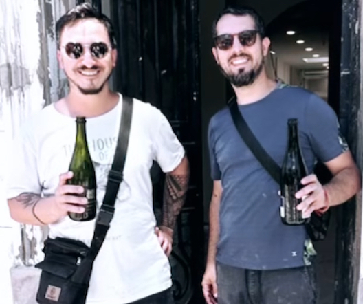

¿Quienes somos?
Fundado en 2019 por Matias, un chef especializado en masa madre oriundo de Villa General Belgrano ; y Jeremías, un administrador de empresas cordobés especialista en consultoría gastronómica, Backerhaus se erige como una alternativa saludable a la panificación moderna, renovando y revalorizando los métodos de elaboración tradicionales , respetando los procesos naturales en la producción, evitando así el uso de conservantes, adivitos y premezclas que muchas veces resultan dañinas para la salud de los consumidores. Es en este sentido que el principal objetivo de Backerhaus es aportar experiencias genuinas que enriquezcan el encuentro entre las personas utilizando como medio productos aptos para su consumo saludable y elaborados con materia prima de primera calidad.
Nuestro equipo
Un grupo de personas muy copadas